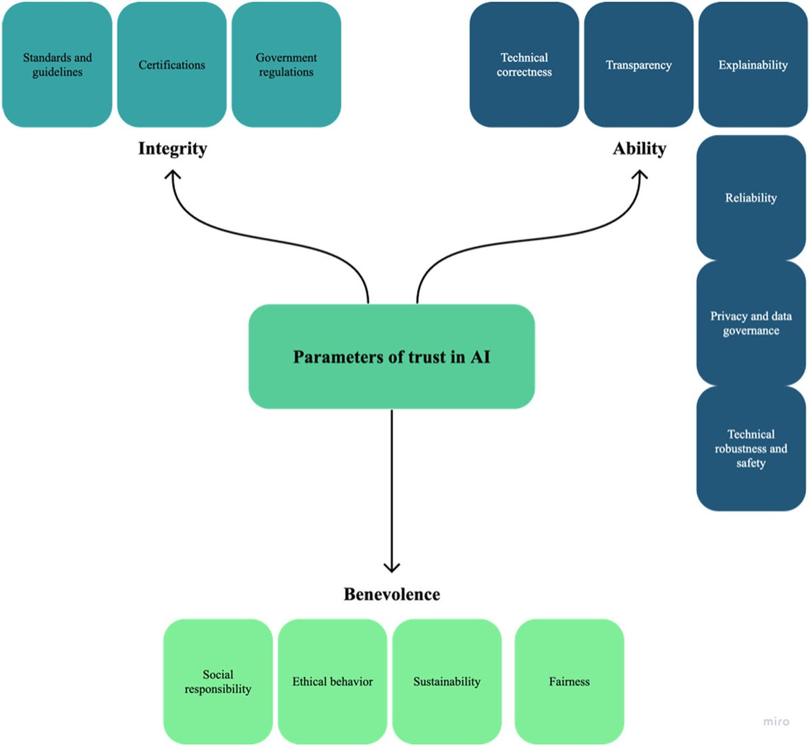
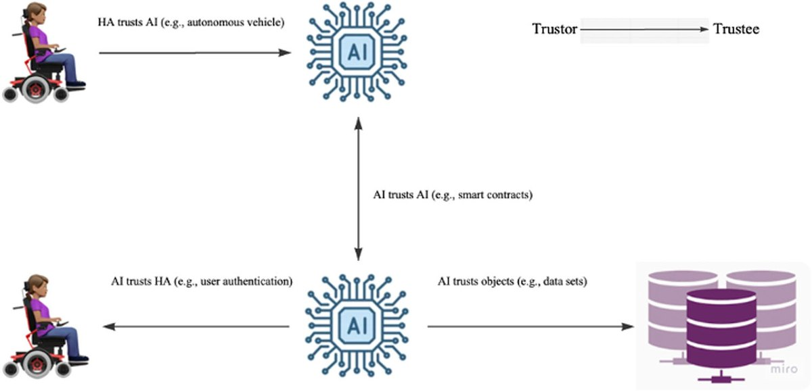
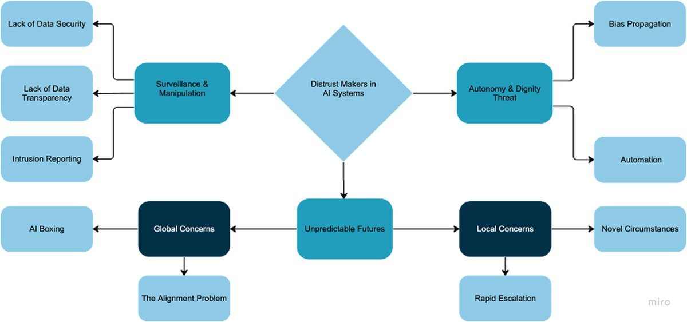
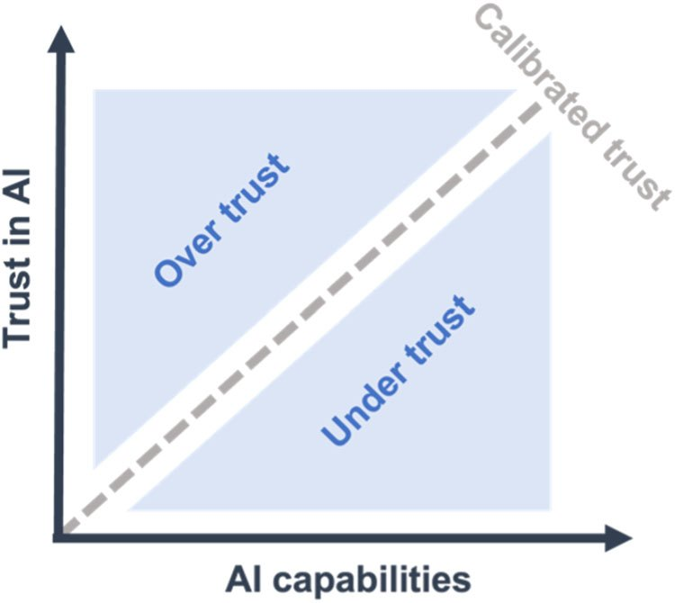
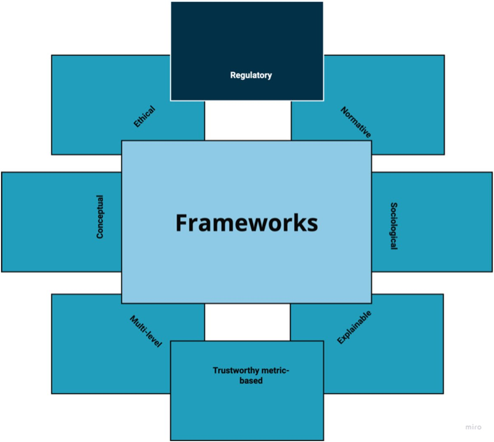
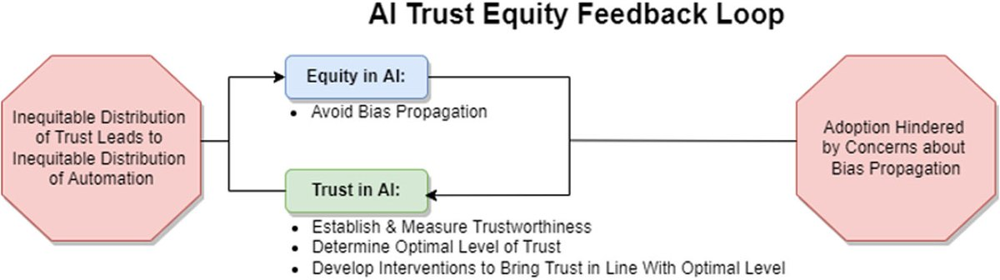
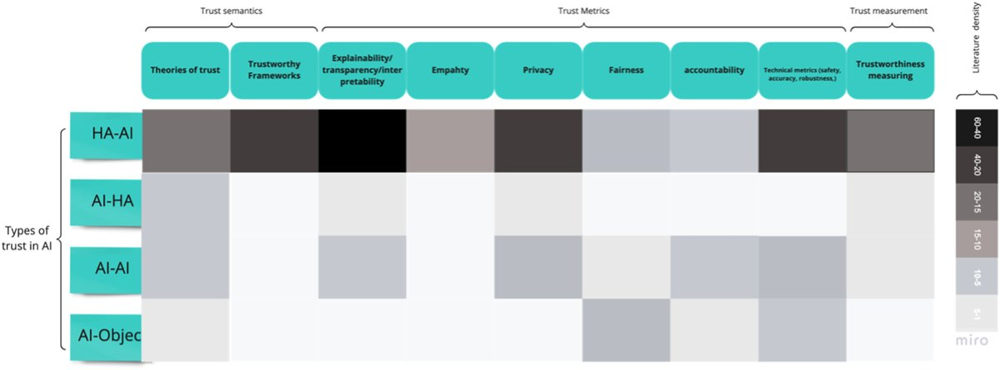
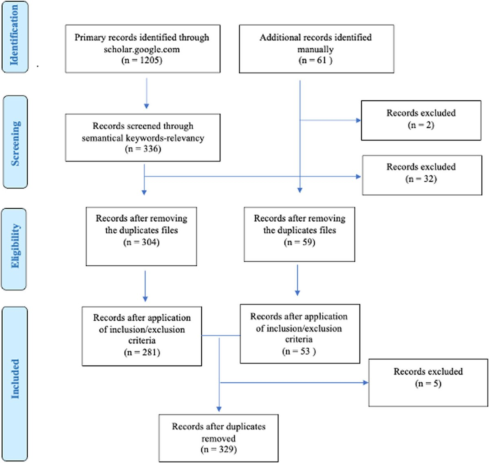

AI systems now act as tools, co-assistants and semi-agents that shape human thinking and decisions. Trust and distrust regulate how far that influence spreads: trust speeds adoption and distrust slows it. In this systematic literature review we conceptualize trust in the AI literature, examine trust across types of human–machine interaction and application domains, and propose a taxonomy of trustworthiness metrics, both technical (safety, accuracy, robustness) and non-technical (ethical, legal, mixed). We also review how trust is measured, what breaks it, what builds it, and the open questions for trustworthy AI.
Highlights
Trust in AI is studied across healthcare, autonomous vehicles, finance, robotics, chatbots, the military and disaster management.
Accuracy can matter more to users than explainability, and local explanations tend to work better than global ones.
Distrust rises with the stakes of a decision and with threats to autonomy and dignity.
Trust should be calibrated: interpretable, uncertainty-aware systems help users avoid both over-trust and distrust.
Results

Fig. 3: parameters of trust in AI, grouped into ability, integrity and benevolence.

Fig. 2: types of trust interaction: humans trusting AI, AI trusting humans, AI trusting AI, and AI trusting objects.

Fig. 5: three major classes of distrust makers in AI systems.

Fig. 6: the calibrated trust axis. Trust should track AI capability, avoiding both over-trust and under-trust.

Fig. 4: frameworks that can be employed for trustworthy AI.

Fig. 7: the AI trust equity feedback loop.

Fig. 8: heatmap of how current research is distributed across trust semantics, metrics and measurement.

Fig. 1: PRISMA flow diagram for the review.
How it works
Google Scholar searches for trust and trustworthiness in AI.
Inclusion: peer-reviewed English journal articles where trust in AI is the main topic.
Four researchers coded the 329 papers into eight major codes.
Synthesis of trust measurement methods, from questionnaires to psycho-physiological signals.
Afroogh, S., Akbari, A., Malone, E., Kargar, M., & Alambeigi, H. (2024). Trust in AI: progress, challenges, and future directions. Humanities and Social Sciences Communications, 11(1), 1568.